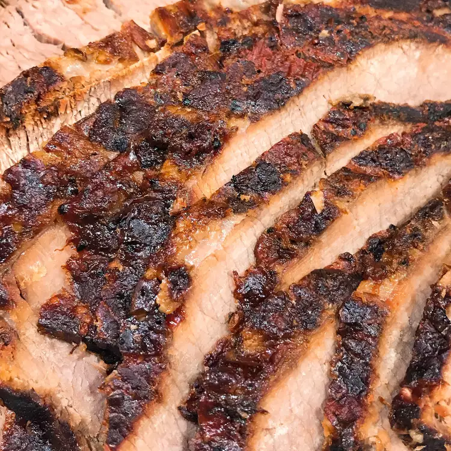

Smoked Brisket

Description
This smoked brisket recipe is a family favorite. It's easy to make
and tastes great.
Ingredients
- wood chips
- ¼ cup paprika
- ¼ cup white sugar
- ¼ cup ground cumin
- ¼ cup cayenne pepper
- ¼ cup brown sugar
- ¼ cup chili powder
- ¼ cup garlic powder
- ¼ cup onion powder
- ¼ cup kosher salt
- ¼ cup freshly cracked black pepper
- 10 pounds beef brisket, or more to taste